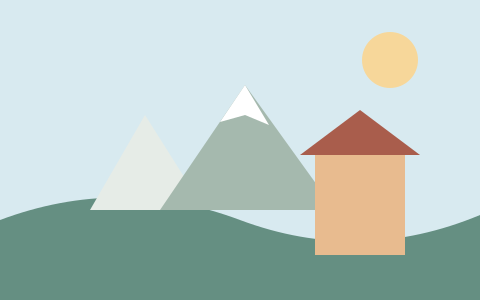

Explore destinations
Different destinations offer different lifestyles. Use this overview as a starting point, not a substitute for official guidance.

Germany
Explore historic towns, public transportation, language learning, and housing options.

Netherlands
Research cycling-friendly cities, housing availability, employment, and residence permits.
Canada
Compare regions, weather, jobs, and immigration pathways.
Destination comparison
| Destination | Language research | Planning priorities |
|---|---|---|
| Germany | German | Residence rules, jobs, housing |
| Netherlands | Dutch; English use varies | Housing, permits, jobs |
| Canada | English and/or French by region | Immigration pathway, province, climate |
Visa and work eligibility depend on personal circumstances and current rules. Always check official sources.